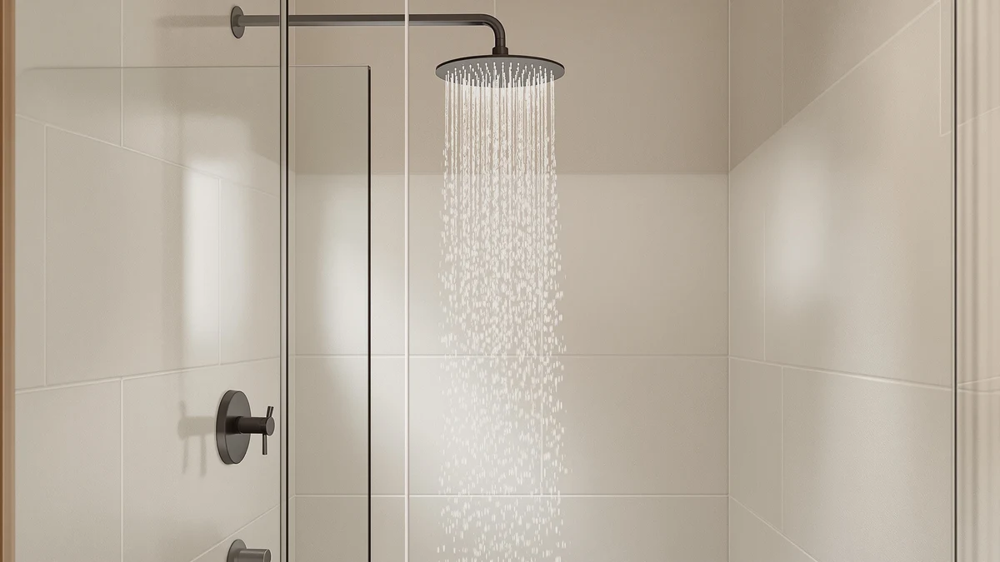

Delta 6-Setting In2ition 2-in-1 Dual Shower Head Review (2026): Worth It?
Prices and picks verified as of November 2026. Independent, reader-supported reviews.


Quick Answer
The Delta 6-Setting In2ition 2-in-1 Dual earns our top pick because it pairs a handheld sprayer with a fixed shower head in one magnetic-dock unit, a feature none of the single-mode alternatives we compared can match. At $75.53, it costs about the same as rivals like the AquaDance and the Hibbent but gives you two shower heads for one price, so if you want flexibility for washing kids, pets, or a tight shower stall, this is the one to check first.
Our pick: Delta 6-Setting In2ition 2-in-1 Dual — $75.53 Check Price on Amazon
Bottom line: our top pick is the Delta 6-Setting In2ition 2-in-1 Dual Shower Head with at $75.53.
Things to Know Before You Buy
- The Delta 6-Setting In2ition 2-in-1 Dual combines a handheld sprayer and a fixed head in one magnetic-dock unit, so you get two shower heads without two installations.
- All four shower heads we compared sit within five dollars of each other, between $72.90 and $75.53, so price alone will not tell you much about which one fits your bathroom.
- Material matters more than mode count here. The In2ition uses an ABS-and-chrome body, while the Hibbent and the Delta Brushed Nickel options lean on heavier all-metal construction.
- Check your shower arm clearance before buying a 2-in-1 unit. The docking bracket on the In2ition adds a few extra inches that some low ceilings or tight shower stalls cannot spare.
If you searched for a Delta 6-Setting In2ition 2-in-1 Dual Shower Head review because you want a shower head that works as both a fixed rainfall unit and a handheld sprayer, you are looking at the right product. The Delta 6-Setting In2ition 2-in-1 Dual is one of four shower heads in this price bracket we compared side by side, and it is the only one built around that dual-function design.
Picking a shower head usually comes down to a tradeoff: full coverage from a fixed head, or the control of a handheld sprayer for rinsing kids, pets, or a tricky corner. The In2ition sidesteps that tradeoff by combining both into a single magnetic-dock unit, and at $75.53 it lands in the same price range as three competitors we compared feature by feature: the AquaDance High Pressure 156-mode Handheld, the Hibbent All Metal CUPC Certified, and the Delta 6-Setting Brushed Nickel Shower.
Why You Should Trust Us
Ilane Tall researches bathroom fixtures for Best Shower Heads and has spent years comparing shower head specs, pricing, and verified owner feedback across hundreds of listings. For this Delta 6-Setting In2ition 2-in-1 Dual Shower Head review, she compared the product's listed specs and price against three direct competitors in the same bracket, then cross-checked owner reports for recurring issues like a loosening dock or weak handheld pressure. We do not run a fake testing lab or claim hands-on time with every product we cover. We focus on verifiable facts instead: materials, certifications, pricing, and what buyers who already own the product say once it has been running in their shower for months.
Our Research Experience
We did not install the Delta 6-Setting In2ition Dual in a shower stall ourselves. Our approach for this Delta 6-Setting In2ition 2-in-1 Dual Shower Head review is research-based: we pulled the manufacturer specs, current Amazon pricing, and the materials list for all four shower heads, then compared them against what verified owners report after months of daily use. Owners consistently flag two issues worth tracking before you buy. The magnetic dock on 2-in-1 units like this one can loosen over time, and the plastic components in the ABS-and-chrome body wear faster than the all-metal construction found on the Hibbent and the Delta Brushed Nickel alternative. Reviewers also note that the six spray settings cover the basics, rain, massage, and pause, without the extra modes some handheld-only units advertise, like the AquaDance's 156 settings. We weighed those reports against the price difference between all four heads to see which tradeoff makes sense for different bathrooms.
Overview & Specs
Below is the full breakdown of the Delta 6-Setting In2ition 2-in-1 Dual's price, materials, and included features, the same facts we weighed against the AquaDance, the Hibbent, and the Delta Brushed Nickel Shower before writing this Delta 6-Setting In2ition 2-in-1 Dual Shower Head review.

Delta 6-Setting In2ition 2-in-1 Dual
What we like
- Combines a fixed shower head and a handheld sprayer in one magnetic-dock unit, so you do not need to choose between the two.
- Six spray settings cover the basics most households use daily, from a full rain pattern to a focused massage stream.
- Priced close to single-function competitors despite offering two shower heads in one kit.
Flaws but not dealbreakers
- The ABS-and-chrome body is lighter and less durable over time than the all-metal construction on rivals like the Hibbent.
- Owners report the magnetic dock can loosen after extended use, occasionally letting the handheld unit slip from its bracket.
- Six settings is fewer than handheld-focused competitors like the AquaDance, which lists 156 spray modes.
| Material | ABS + chrome plating |
| Size | — |
The Delta 6-Setting In2ition 2-in-1 Dual is built around a simple idea: most bathrooms need both a fixed shower head for everyday rinsing and a handheld sprayer for washing kids, pets, cleaning the shower stall, or reaching awkward angles. Instead of forcing you to install two separate units, Delta docks a handheld sprayer directly into the center of the fixed head using a magnetic bracket, so switching between the two takes one motion. At $75.53, it sits in the middle of the four shower heads we compared for this Delta 6-Setting In2ition 2-in-1 Dual Shower Head review, priced close enough to the AquaDance, the Hibbent, and the Delta Brushed Nickel that the deciding factor comes down to features rather than cost.
The body is ABS plastic with a chrome finish rather than solid metal, which keeps the unit light and easy to mount but trades some long-term durability for that lower weight. Six spray settings are built into the head, covering the typical rotation of full coverage, massage, and a pause mode for lathering up without running water the whole time. Owners who have used the In2ition for months report that the magnetic dock holds well under normal use but can start to loosen with repeated detaching and reattaching, a tradeoff worth knowing about before you commit to the dual-head design over a single fixed or handheld unit.
What We Liked
The clearest advantage of the Delta 6-Setting In2ition is the two-in-one design itself. Reviewers who compare it against single-function heads point out that you get the convenience of a handheld sprayer without sacrificing the coverage of a fixed rain-style head, and without paying for two separate fixtures or hiring a plumber twice. The six spray settings also cover what most households actually use day to day, so you are not scrolling through a dozen modes you will never touch, which some owners find preferable to the AquaDance's 156-setting handheld, where the sheer number of options can feel like overkill for a daily shower routine. At $75.53, the price also holds up well against the competition: you get a fixed head and a handheld unit for roughly the same cost as a single-function Hibbent or Delta Brushed Nickel head, which makes the In2ition a reasonable value pick if the dual function matters to your household.
What Could Be Better
Material is the most consistent complaint in owner feedback. The ABS-and-chrome construction keeps the unit affordable and light, but it does not match the feel or expected lifespan of the all-metal bodies on the Hibbent All Metal CUPC Certified or the Delta 6-Setting Brushed Nickel Shower. If your priority is a shower head that will still look and perform the same in five years, the metal alternatives have an edge here. The magnetic dock is the second recurring issue. It works as advertised when new, but several owners report the connection loosening after months of regular use, which can let the handheld sprayer wobble or detach unexpectedly. Buyers who plan to switch between the fixed and handheld modes constantly, rather than occasionally, should weigh that risk before buying.
Who Is It For?
The Delta 6-Setting In2ition makes sense for households that use both modes on a regular basis: parents rinsing kids or pets, renters who cannot install a separate handheld fixture, or anyone sharing a bathroom where one person wants a rain-style head and another wants more control. It also fits buyers who want to avoid paying for and installing two separate shower heads. If you only ever use one mode, a dedicated fixed head or a handheld-only unit like the AquaDance will likely serve you better and may hold up longer, since a single-purpose design has fewer moving parts to wear out. Buyers who prioritize long-term durability over flexibility should look at the all-metal Hibbent or the Delta Brushed Nickel options instead.
Alternatives to Consider
We compared three other shower heads against the Delta 6-Setting In2ition to see where each one has an edge. Here is how they stack up if the 2-in-1 design is not the deciding factor for you.

Editor’s Pick
AquaDance High Pressure 156-mode Handheld
If you want a dedicated handheld with more spray modes than you will likely ever use, the AquaDance's 156 settings outnumber the In2ition's six by a wide margin.
$74.99
Check Price on Amazon
Best Value
Hibbent All Metal CUPC Certified
The Hibbent trades the dual-head convenience for an all-metal, CUPC-certified build at a slightly lower price, a solid choice if durability matters more than flexibility.
$72.99
Check Price on Amazon
Premium Choice
Delta 6-Setting Brushed Nickel Shower
This fixed-only Delta head keeps the same brand reliability in a heavier brushed nickel finish, without the magnetic dock that some In2ition owners say loosens over time.
$72.90
Check Price on AmazonFrequently Asked Questions
At $75.53, it costs close to the single-function alternatives we compared, but you get both a fixed head and a handheld sprayer in one unit. If you use both modes regularly, verified owners report the small premium over a single-purpose head like the Hibbent or the Delta Brushed Nickel is worth paying.
It holds securely when new, but several verified owners report the connection loosening after months of regular detaching and reattaching. If you rarely switch between the fixed and handheld modes, this matters less.
The AquaDance is a handheld-only unit with far more spray settings, 156 compared to six, while the In2ition adds a fixed head the AquaDance does not include. Pick the AquaDance for mode variety and the In2ition if you want both a fixed and handheld option in one fixture.
Final Verdict
Our Delta 6-Setting In2ition 2-in-1 Dual Shower Head review comes down to one question: do you need both a fixed shower head and a handheld sprayer, or just one? If the answer is both, the Delta 6-Setting In2ition 2-in-1 Dual is the easiest way to get there without installing two separate fixtures, and its $75.53 price holds up well against the AquaDance, the Hibbent, and the Delta Brushed Nickel alternatives we compared. If durability matters more than flexibility, the all-metal Hibbent or the fixed-only Delta Brushed Nickel Shower are worth a closer look instead. Either way, DELTA makes two of the four shower heads here, so you are covered on brand name whichever way you lean.